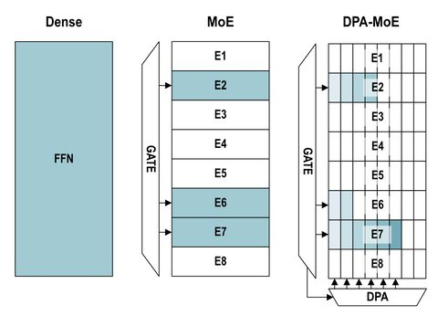
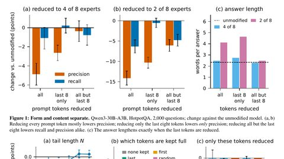
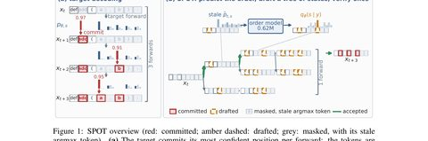
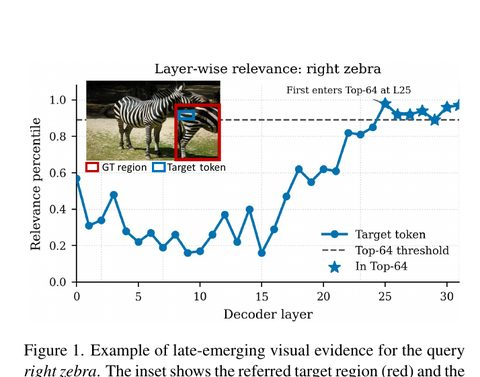
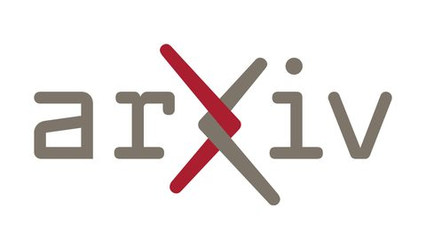
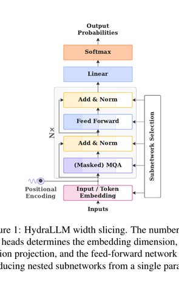
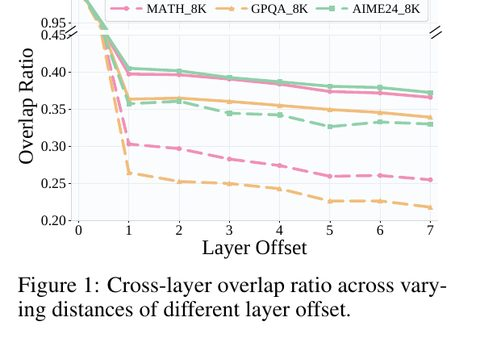
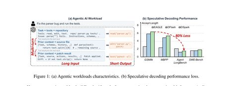

2026-10-19
深读

深读 · DPA-MoE：专家精度，运行时现调
原文链接：https://arxiv.org/abs/2610.21378
简报
多模态推理简报 · 10月19日 06:00
深读

深读 · Prefill 砍专家：伤害只在少数词元
原文链接：https://arxiv.org/abs/2610.22454
简报
多模态推理简报 · 10月19日 04:00
深读

深读 · SPOT：扩散模型投机解码，先猜顺序
原文链接：https://arxiv.org/abs/2610.22543
简报
多模态推理简报 · 10月19日 02:00
深读

深读 · CatchUp：视觉词元删了，还能请回来
原文链接：https://arxiv.org/abs/2610.23324
简报

多模态推理简报 · 10月19日 00:00
深读

深读 · HydraLLM：一个模型，运行时切宽度
原文链接：https://arxiv.org/abs/2610.23455
深读

深读 · Prism Attention：稀疏索引先粗选，再细修
原文链接：https://arxiv.org/abs/2610.22985
2026-10-18
简报
多模态推理简报 · 10月18日 22:00
2026-10-19
深读

深读 · DLite：草稿员不背历史，只看眼前
原文链接：https://arxiv.org/abs/2610.23787